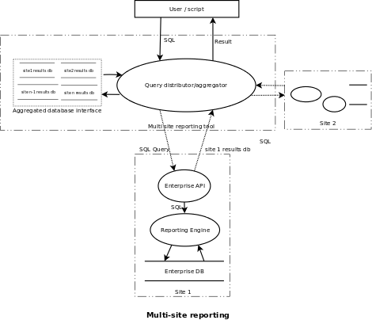

Multi-Site Queries
A CFEngine site can be viewed as an independent group of machines/devices managed and maintained by CFEngine. Distribution and execution of policies and report collection happen within a site.
Policy distribution is handled by the policy-server, cf-serverd. CFEngine
agents (cf-agent) "pull" the policies made available by the policy-server
and apply them to the clients. CFEngine's report collector (cf-hub) gathers
reports from all the available agents and stores them into a centralized
reporting database. These reports can then be accessed through the CFEngine
Mission Portal or the CFEngine Enterprise API (introduced in v3.0). An
organization can maintain multiple sites. Until CFEngine Enterprise v3.0.x,
the reports collected in one site could not be easily compared/co-related with
another site.
In 3.5, with enhancements to the Enterprise API, querying multiple sites with a single command is possible. SQL queries can be executed on different sites transparently with multi-site query tool, thus making it is easier for users get a high level overview of their systems. The same queries that was being used to find answers about a particular site can be used on multiple sites. E.g.,
SELECT count(*) as total_count FROM Hosts;
when executed with the multi-query tool gives the total number of hosts bootstrapped to "all" the sites.
The following diagram shows an overview of how multi-query reporting tool works.

Definition
- Aggregator
A python script multidb-query.py that distributes the queries to available
CFEngine Database Servers and aggregates the result.
- Aggregated database interface
Combines all the sqlite3 result files and presents an interface for the aggregator to send the aggregation query. This is implemented internally with the use of sqlite's ATTACH DATABASE command.
- Replica detection
The Enterprise API returns the available replica set to redirect the query.
- sqlite3 export
A part of reporting engine that converts the result-set into a sqlite3 db file for transfer to the aggregator.
Installation
Ubuntu 12.04 (precise):
$ sudo apt-get install gdebi-core
$ sudo gdebi cfengine-multihub_1.0.0_all.deb (installs dependencies too)
$ sudo apt-get install python-pip (might need to upgrade requests see Troubleshooting)
$ sudo pip install requests --upgrade
Common use cases
- Simple query (SELECT * FROM Hosts;)
./multidb-query.py -u"admin" -p"admin" -H'[["192.168.0.2", "192.168.0.3", "192.168.0.4"],["192.168.0.5"],["192.168.0.6"]]' -q"SELECT * FROM Hosts;" -s"http" -c
HostKey HostName IPAddress ReportTimeStamp FirstReportTimeStamp
20ecdd8da8aacd89fe1317dbfd399cf69a011bcdd7919fac753a11f9db46ceb7 192.168.0.6 192.168.0.6 1370294146 1370282434
0821cf714637e2446df0d445fd4a25b587df3f00bd6eb408e6a90f0bf67342e8 master 192.168.0.2 1370294127 1370281540
5252d3cdbcdcd61bedc0b4e49f890a54a75693848ab50f8e1276d426a5d235d5 192.168.0.5 192.168.0.5 1370294140 1370282119
- Joins between multiple tables
Find all RedHat hosts:
./multidb-query.py -u"admin" -p"admin" -s"http" -c -H'[["192.168.0.2", "192.168.0.3", "192.168.0.4"],["192.168.0.5"],["192.168.0.6"]]' -q"SELECT h.HostName AS hname, v.VariableValue AS vvalue FROM Hosts AS h INNER JOIN Variables AS v ON h.HostKey=v.HostKey where v.VariableName=\"flavour\" AND v.VariableValue REGEXP(\"redhat.*\");"
hname vvalue
192.168.0.6 redhat_5
master redhat_5
192.168.0.5 redhat_5
Important: It is recommended for column names / table names to be aliased
during JOIN queries. SELECT * on a JOIN query may result in errors, because
different tables can have columns with the same name, eg. HostKey is common in
most tables. The Enterprise API (server) will not be able to create
intermediate(results) database for transfer to the client.
- Count & Aggregation queries
Count the number of RedHat hosts:
./multidb-query.py -u"admin" -p"admin" -s"http" -c -H'[["192.168.0.2", "192.168.0.3", "192.168.0.4"],["192.168.0.5"],["192.168.0.6"]]' -q"SELECT count(h.HostName) as redhat_hosts_count FROM Hosts AS h INNER JOIN Variables AS v ON h.HostKey=v.HostKey where v.VariableName=\"flavour\" AND v.VariableValue REGEXP(\"redhat.*\");"
redhat_hosts_count
3
- Sorting and Grouping
./multidb-query.py -u"admin" -p"admin" -H'[["192.168.0.2", "192.168.0.3", "192.168.0.4"],["192.168.0.5"],["192.168.0.6"]]' -q"SELECT * FROM Variables ORDER BY VariableType LIMIT 4;" -s"http" -c
HostKey NameSpace Bundle VariableName VariableValue VariableType
20ecdd8da8aacd89fe1317dbfd399cf69a011bcdd7919fac753a11f9db46ceb7 sys workdir /var/cfengine string
20ecdd8da8aacd89fe1317dbfd399cf69a011bcdd7919fac753a11f9db46ceb7 sys winsysdir /dev/null string
20ecdd8da8aacd89fe1317dbfd399cf69a011bcdd7919fac753a11f9db46ceb7 sys winprogdir86 /dev/null string
20ecdd8da8aacd89fe1317dbfd399cf69a011bcdd7919fac753a11f9db46ceb7 sys winprogdir /dev/null string
Interface
- Input
SQL query, CFEngine Enterprise Servers with replica set defined e.g. [[cfdb1,cfdb2,cfdb3], [cfdb4,cfdb5,cfdb6]], username/password
- Output
Query result table printed to the terminal (tab separated)
- Errors
Displayed in the format - "ERROR:[host IP]:Error message"
- Debugging and trouble shooting
Various output levels (--info, --debug) available
Command line interface:
optional arguments:
-h, --help
show this help message and exit
-d, --debug
Enable debugging output
-i, --inform
Output details about the current operation. Similar to 'verbose' mode
-t TIMEOUT, --timeout TIMEOUT
Maximum time to wait for a hub to respond
-c, --cleanup
Remove intermediate files
-e, --continue-on-error
Continue on error. Reports will be generated if report collection from
at least one hub is succesful
-s URL_SCHEME_NAME, --url-scheme-name URL_SCHEME_NAME
Url scheme name. eg. https(default), http
Required arguments:
-u USER, --user USER
Username that has permissions to query all the hubs
-p PASSWORD, --password PASSWORD
Password for user
-H HUBS, --hubs HUBS 2D array of hub ips. eg.
"[['10.0.0.5','10.0.0.6'],['10.0.0.7']]"
-q SQL, --sql SQL
SQL query string
Limitations:
- Embedded SQL is not supported at the moment eg. you will not be able to do:
SELECT count(SELECT DISTINCT HostName From Hosts) from Hosts
Recommendations and best practices:
Always use aliases for operations involving multiple tables eg. instead of this:
SELECT Hosts.HostKey, PromiseLogs.HostKey FROM Hosts INNER JOIN
PromiseLogs ON Hosts.HostKey=PromiseLogs.HostKey;
use:
SELECT Hosts.HostKey AS hkey, PromiseLogs.HostKey AS pkey FROM Hosts INNER
JOIN PromiseLogs ON hkey=pkey;
or even better:
SELECT h.HostKey AS hkey, p.HostKey AS pkey FROM Hosts AS h INNER JOIN
PromiseLogs AS p ON hkey=pkey;
Always use aliases for functions
eg. SELECT count(*) as column_count from Hosts
Use LIMIT with ORDER BY whenever possible
Instead of:
SELECT Hosts.HostName AS Name FROM Hosts
LIMIT 10
(This might return data that come from a single CFDB)
Use:
SELECT Hosts.HostName AS Name FROM Hosts
ORDER BY Hosts.ReportTimeStampLIMIT 10
Troubleshooting:
Error in status query
Always check the syslog in the corresponding CFEngine Database Server if the error output at the multi-site client is not sufficient. The ip address for the machine where the error occurred is prefixed with every error message. There are --inform(-i) and --debug(-d) options available that provide detail about the individual steps on the operation.
ERROR:root:[10.100.100.130] Error exporting results to sqlite3 database file
ERROR:root:Error in status query
Something went wrong while executing the SQL query at the server. Check the syslog in [10.100.100.130]. If you see something like the following, it means that the Enterprise API received the exact same query:
Error executing query - message: database is locked, sql: "CREATE TABLE results
Same query from multiple requests at the same time is not supported currently. A simple example would be - trying to query the same CFEngine Database Server in a multi-site query:
$ python multidb-query.py -u admin -p admin
-H '[["10.100.100.130"], ["10.100.100.130"]]' -s"http"
-q"SELECT HostName, Count(1) as HostCount FROM Hosts GROUP BY HostName LIMIT 100".
No hubs available to query
ERROR:root:Error: No hubs available to query, cannot continue
If one of the hubs in the query cannot be contacted, the query cannot continue
by default. To override this behavior use the -e, --continue-on-error
option.
If you still get this error with -e, then there is probably a problem with
network connectivity.
No hubs available to query for a group
WARNING:root:No hubs available to query for group: [u'10.100.100.10', u'10.100.100.11']
This warning is displayed when run with -e, --continue-on-error option. This means that none of the members in the replica set could be contacted.
Invalid response code
This is the HTTP response code received from the server. Currently only 200 (success) is regarded as valid
Check if CFEngine enterprise api is running and responding correctly on the site. eg. curl admin:admin http://10.100.100.130/api
Connection Error
Connection errors can be caused due to various reasons. A stack trace is printed in case of a connection error.
- Use of incorrect URL Scheme name
Multi-Site reporting uses "HTTPS" by default. If you are hosting CFEngine Enterprise API under a different URL Scheme name, you would get
ConnectionError: HTTPSConnectionPool(host='10.100.100.177', port=443): Max retries exceeded with url: /api (Caused by <class 'socket.error'>: [Errno 111] Connection refused)
INFO 2013-05-13 15:23:15,168 [10.100.100.177] Hub NOT available for report query
You can specify a different scheme name with the option:
-s URL_SCHEME_NAME, --url-scheme-name URL_SCHEME_NAME
Url scheme name. eg. https(default), http
$ ./multidb-query.py -u"admin" -p"admin"
-H'[["10.100.100.177"],["10.100.100.179"]]' -q"SELECT * from hosts;"
-s"http" -i
Invalid input IP addresses list
If you do not supply a proper JSON array with correctly formatted IP addresses, you might get an error such as the following:
ERROR 2013-05-29 14:50:02,158 Invalid hub IP addresses list. No JSON object could be decoded
or,
ERROR 2013-05-29 14:55:40,419 Invalid hub IP addresses list. Expecting , delimiter: line 1 column 8 (char 8)
Please make sure that the IP address list supplied is properly formatted.
-H"['10.100.100.130'],['10.100.100.131']"
Incorrect - a proper JSON array needs to be enclosed in an outer square
brackets []
-H"[['10.100.100.130'],['10.100.100.131']]"
Incorrect, notice the outer double quotes, and inner single quotes.
-H'[["10.100.100.130"],["10.100.100.131"]]'
Correct.
To supply replica set groups:
-H'[["10.100.100.130", "10.100.100.132", "10.100.100.133"],["10.100.100.131", "10.100.100.135"]]'
Outdated python-requests version
The api for python-requests has been changed v1.0.0 (https://github.com/kennethreitz/requests/blob/master/HISTORY.rst)
Sample errors:
AttributeError: 'Response' object has no attribute 'json'
AttributeError: 'Response' object has no attribute 'text'
To upgrade python-requests:
sudo pip install requests --upgrade